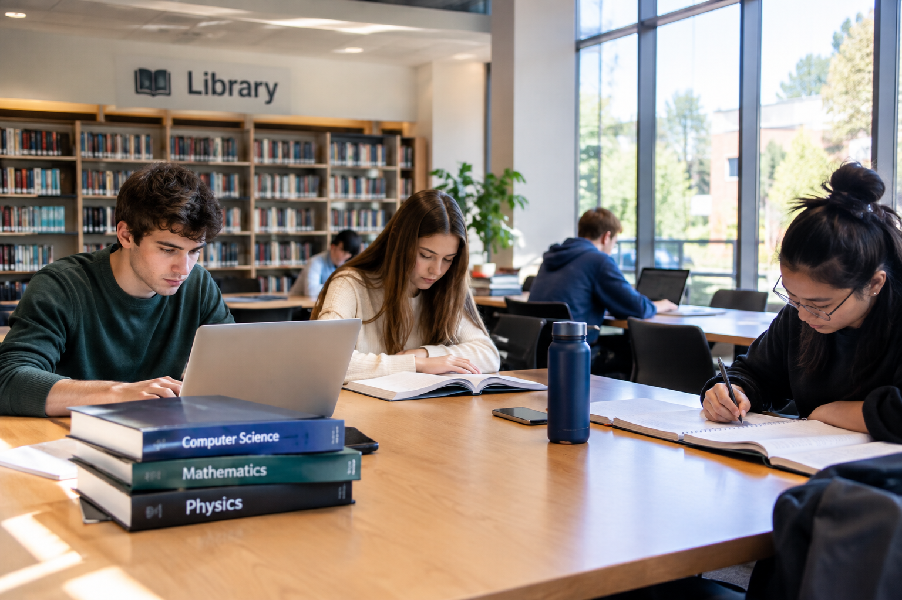

Campus Resources
Useful Student Resources

Our campus provides different resources to support students in their studies and university life. Students can use study spaces, computers, and activity centers throughout the campus.
| Resources | Purpose | Location |
|---|---|---|
| Library | Books and study spaces | Main Building |
| Student Center | Student Activities | Campus Center |
| Computer Lab | Computer and internet access | Science Building |